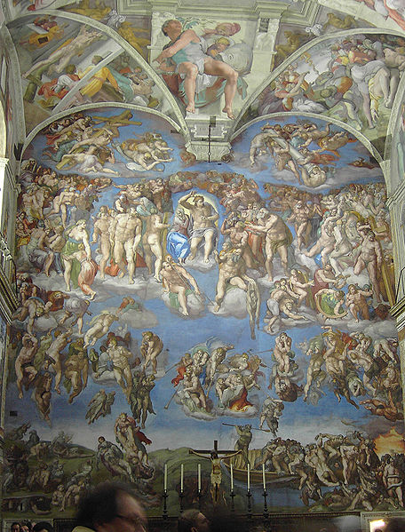
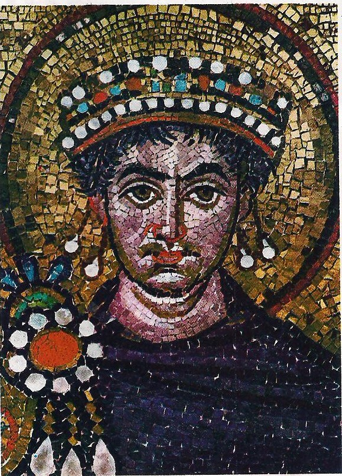
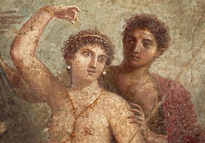
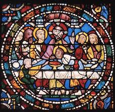

Artes
Afresco
O afresco é uma técnica de pintura em paredes ou tetos de gesso ou revestidas com argamassa, ainda frescas, e geralmente assumem a forma de mural. Muitas vezes, inclusive, o termo é utilizado para referir-se a pintura mural em geral, que é um tremendo erro, sendo que o afresco tem uma técnica muito específica para ser feito.
Por conta do estado fresco do gesso ou da argamassa, os pigmentos precisam ser diluídos apenas em água e, conforme a superfície pintada for secando, secam também o desenho, que passa a integrar a superfície, foi bastante utilizada no norte da Europa e na Itália, exceto Veneza. O afresco é bastante utilizado em igrejas e edifícios públicos, e costuma ocupar grandes espaços.
O nome afresco, derivado de “buona fresco”, que significa “boa nova”, em italiano, já era utilizado por gregos e romanos, tendo relatos históricos de sua utilização na decoração da Pinacoteca da Acrópole de Atenas, que datam do século V a.C.
O afresco foi utilizado na arte medieval, renascentista e barroca. Muitos afrescos de todas estas épocas podem ser apreciados na Itália, berço, conjunto com a Grécia, da técnica. Mas a técnica também pode ser encontrada na cultura de chineses e hindus.
A técnica exige do artista muita destreza e rapidez, pois a secagem é muito rápida, o que obriga o pintor a ser ainda mais rápido e competente no que faz. Uma das grandes desvantagens do afresco é a quase impossibilidade de corrigir erros depois da conclusão da pintura.
As etapas de preparação para a execução do afresco são a preparação do suporte (parede ou teto) para a colocação da argamassa, a pintura do afresco e a colocação da camada de cristalização, para proteção da obra.
Os artistas mais reconhecidos pelo afresco são: Giotto, primeiro grande mestre da técnica, Masaccio, Rafael, Michelangelo, Tiepolo,Nazarenes, Cornelius, Riviera, Orozco e Siqueiros.
A técnica do afresco esteve presente em grandes momentos da história da arte, e ainda é muito utilizada e valorizada por artistas puristas, pois estes acreditam que a técnica somente pode ser executada com pigmentos naturais.
Mosaico bizantino
Uma técnica que fazia sucesso na época Bizantina e que muito se destacaram nesta arte, foi o mosaico. Constava de trabalho criado com pedacinhos de pedras coloridas, que eram fixadas com argamassa ou gesso, em uma parede. Compunham desta forma belas ilustrações ou desenhos. Nestes mosaicos era comum retratarem o imperador, os profetas, e divindades, principalmente do cristianismo.
O mosaico consiste na colocação, lado a lado, de pequenos pedaços de pedra ou mármore de diferentes colorações, sobre uma superfície de gesso ou argamassa. Essas pedras são colocadas de acordo com um desenho pré-determinado. A seguir, a superfície recebe uma solução de cal, areia e óleo, que preenche os espaços vazios, aderindo melhor os pedaços de pedra. Os mosaicos tiveram diferentes utilizações no decorrer da históra, mas foi com os bizantinos que ele atingiu sua mais perfeita realização.
O mosaico é a expressão máxima que podemos ver da arte bizantina. Ele não servia apenas para decorar as paredes e as abóbodas, mas sim também servia como fonte de instrução e guia espiritual para os fiéis, mostrando-lhes cenas da vida de Cristo, dos profetas, e dos vários imperadores. Plasticamente, o mosaico bizantino não se assemelha aos mosaicos romanos, pois eles são confeccionados com técnicas diferentes e seguem convenções que regem também os afrescos. Neles, por exemplo, as pessoas são representadas de frente e verticalizadas para criar uma certa espiritualidade; a perspectiva e o volume são ignorados e o dourado é bastante utilizado.
Encáustica
Trata-se de uma prática de pintura, a qual é misturada a cor em pó com cera, aquecida e derretida. Esta composição, posteriormente é aplicada em uma superfície a ser pintada. A madeira, a cerâmica e os murais podem perfeitamente servir de suporte para esta técnica.
Por vezes, é necessária uma fonte de calor sob o suporte da pintura, devido à encáustica adquirir uma secagem rápida. O calor concede que a tinta de cera se torne macia, de modo a facultar a aplicação no suporte, conseguindo criar distintas texturas e diversos efeitos de cor.
A palavra encáustica vem do grego, Egkaustiké, que significa queimado. Usavam muito esta técnica na Grécia, desde o séc.V a.c.até o séc. IX d.c.
Para conseguirmos esta técnica, temos de realizar um preparado que consiste num controle de temperaturas e uma enorme gama de procedimentos de aplicação nos seus diversos suportes.
Ela não tem limites, permitindo múltiplas transparências, texturas, densidades, ricas veladuras, relevos e sobreposições. Pode ainda ser misturada com outras técnicas, multiplicando assim as suas possibilidades e versatilidade.
A Encáustica é uma técnica que possui corpo, funde a 60º C e é muito recomendada para pintura em mural, sobre madeira e tela.Por ser de carácter hidrófobo, concluímos então a sua continuidade, sendo classificada como um processo de pintura eterno. É ainda compatível com pigmentos rejeitados para o afresco e o óleo.
A cera usada nesta técnica não amarela, não oxida e seca mais depressa, fazendo com que a pintura possibilite texturas ricas e seguras. Devido à elasticidade natural da cera, ela movimenta-se conforme o suporte e segundo as condições de humidade ou secura. Esta ainda, não exala odores voláteis e tóxicos como acontece em outras técnicas. Com todas estas características podemos afirmar que é uma das mais resistentes técnicas de pintura, senão for a mais resistente.
Vitral
Inicialmente, os vitrais eram uma arte usada nas representações históricas bíblicas dentro das igrejas góticas. Com o passar do tempo, eles foram introduzidos a outros ambientes como forma de decoração. Mas ainda reside nos vitrais a tradição de contar as cenas bíblicas dentro das igrejas.
A história dos vitrais nos remete ainda aos tempos medievais quando eles surgiram na Europa do século 10, nas igrejas francesas e alemãs, quando foram incorporados na arquitetura gótica. Os vitrais tinham por objetivo ilustrar as cenas bíblicas, contando as histórias por meio de figuras num tempo em que uma pouquíssima parcela da população sabia ler. Os vitrais, portanto, eram essenciais para guiar o povo de acordo com os ensinamentos religiosos através das figuras ilustrativas. E era uma das primeiras artes góticas da História.
A cor era elemento essencial para os vitrais que, através da luz que vinha de fora da igreja, despertavam a curiosidade das pessoas em relação às histórias contadas em forma de ilustração. Era um meio de atrair a população às igrejas, com adornos e formas jamais então vistas nas paredes cinzas das catedrais. Há teorias que afirmam que as histórias eram ilustradas nas janelas, e não nas paredes, por causa da luminosidade que remetia à ideia do espírito da luz que atingia os lugares santos, dentro de uma concepção religiosa. A janela, colorida e iluminada, era uma metáfora de portal entre um mundo e outro, entre o universo terreno e o espiritual.
Para se obter um vitral, o artesão dessa época deveria inicialmente realizar o processo de coloração da peça de vidro. Costumeiramente, o vidro cru era misturado a outras substâncias químicas que, ainda na fase de derretimento, determinavam a obtenção de certa tonalidade. Dessa forma, a peça de vidro ainda ficava colorida sem bloquear completamente a passagem de luz pelo material. Cumprida essa primeira etapa, o vidro aquecido era moldado.
Nesse processo, o artesão depositava uma pequena quantidade de vidro fundido na ponta de um tubo oco. Logo depois, ele assoprava a outra extremidade do tubo formando uma bolha de vidro modelável. A manipulação dessa bolha acontecia somente até o momento em que a bolha ganhava o formato de um cilindro. Alcançada essa etapa, era realizado um corte longitudinal nas duas extremidades do cilindro, transformando-o em um cilindro oco.
Superada esses primeiros trabalhos, o cilindro oco sofria um corte e o vidro era moldado até se transformar em uma placa. Cada uma das placas era devidamente resfriada e depois recortada com a ponta de um diamante, que reproduzia o formato que o vitral deveria assumir na composição de uma imagem. Dando sequência ao trabalho, o artesão fazia algumas pinturas opacas em que os traços fisionômicos da imagem a ser formada eram finalmente definidos.
Finalmente, após todo o trabalho com o vidro, as pequenas placas eram encaixadas em uma estrutura metálica conhecida como “perfil de chumbo”. Unidas, as placas eram capazes de materializar grandes composições em que se reproduziam algum relato bíblico ou a imagem de um santo. Após a sua montagem, o perfil de chumbo era encaixado nas aberturas das paredes das catedrais.
